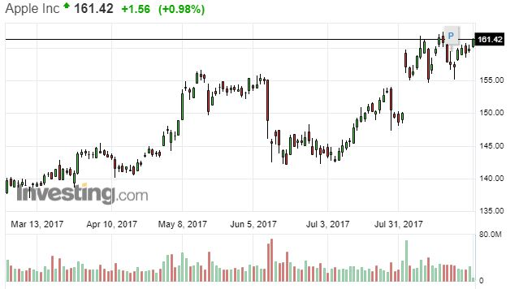
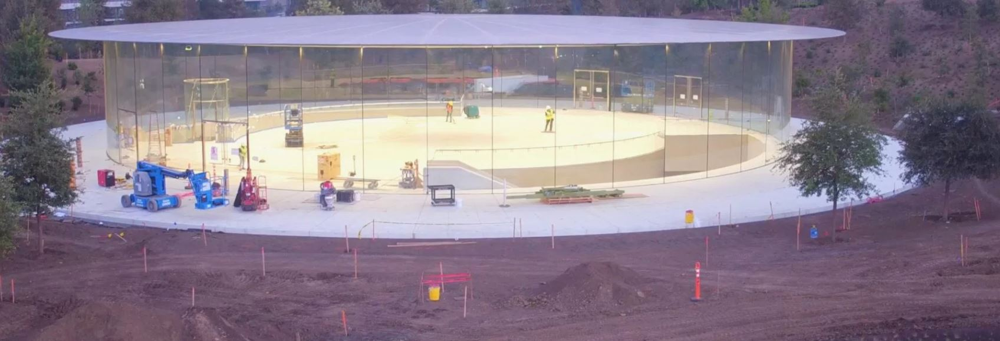

原标题：定了！媒体称苹果于9月12日新品发布会 推出十周年机
马上就进入9月，有关苹果新品发布会的消息层出不穷，不过苹果公司都未予以肯定。
道琼斯援引最新消息称，苹果将于9月12日召开新品发布会。多位知情人士透露，除了发布两款更新机iPhone 7s和iPhone 7s Plus之外，备受瞩目的十周年机“iPhone 8”也将如期发布。伴随推出的还有更高清的4K苹果电视，以及新款苹果手表。
这一消息推动苹果股价周一开盘涨超1%，交投于161.50美元。若涨势延续，有望突破8月15日所创收盘纪录新高161.60美元，今年以来累涨39.4%。
各路分析师一直对苹果能否按时推出十周年纪念机型存在疑虑，并援引了重要零部件短缺和制造技术困难等两大原因。（更多分析，参见华尔街见闻主编精选《读要闻|iPhone与iPad重回增长！十周年机或准时发布一文读懂苹果创纪录的三季报》）
不过据称新版iPhone将指纹识别移到机器背面，理论上降低了制作难度，并保留了前置的3-D面部扫描技术，能在几百毫秒内解锁手机。诸如感应充电、出品唤醒、虚拟Home键、OLED屏幕、AI芯片的新变化也被提及。
通常来说，苹果新机会在发布会后10天内起售。外界预计新款iPhone售价或达到1200美元，成为史上最贵苹果手机。在年末节假日热销期前推出新款手机固然是好消息，但苹果是否会因生产短缺而被迫在今年大搞“饥饿销售”尚不得而知。
CEO库克曾在上月的财报电话会中笑称，所有新品都会按时发布，不理市场负面传闻。而从本次发布会的传闻选址地，也可以看出，苹果似乎对按时推出十周年机动了真格。
过去两年的发布会都在旧金山Bill Graham Civic Auditorium举办，有知情人士透露，这回苹果计划选用其新总部内能容纳1000人的乔布斯剧院（Steve Jobs Theater），纪念意味颇为浓厚。公司的新总部虽在4月开始使用，但尚未完全建成，可能会影响最终的发布会地点或时间。
下图为8月24日科技媒体9to5mac.com发布的乔布斯剧院无人机拍摄图片，看似只是粗略地建了个大概。
有意思的是，苹果新机iPhone 8若按时发布，将在三星新款6.3英寸曲屏旗舰智能手机Note 8在北美地区正式销售的一周后。Note 8是全球首款双摄像头均有光学防抖功能的手机，虽然基本款售价也可能超过1000美元，但比苹果略低。
知情人士透露，苹果最近几周在加大生产力度，可能包含中国以外的其他代工厂。按时推出新机，除了有争夺市场份额、维持高估值的意味之外，也与迎合消费者需求密不可分
市场研究机构451 Research的问卷调查发现，计划在未来90天内更换智能手机的受访者中，有52%看上了iPhone，人数比例为2010年以来最高。
野村证券的分析师指出，苹果的第三季度财报指引预计销售额涨至490亿到520亿美元，代表三季度的手机出货量达到5000万部，比去年同期增长10%。
摩根士丹利特别看好苹果十周年机在大中华区的销量。从去年二季度起，苹果在包括香港和台湾在内的大中华区手机销量锐减16%，同三星一样输给了中国本土品牌。不过很多中国消费者不买去年9月推出的iPhone 7理由之一，是与iPhone 6及6s的外观雷同，因此预计“iPhone 8”改头换面后销量将重新引燃。